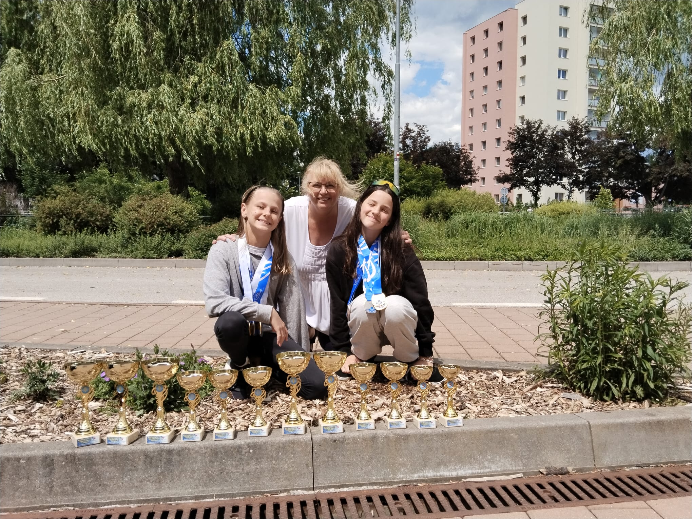
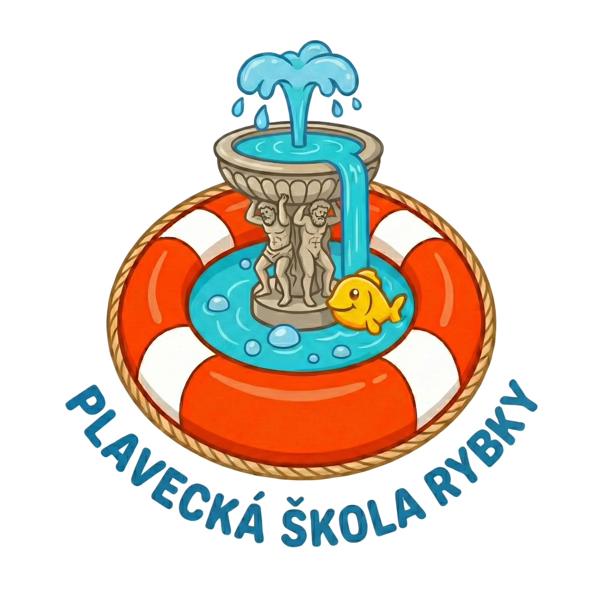

KIN České Budějovice
Plavecký oddíl s tradicí od roku 1951

Nejúspěšnější plavecký oddíl v jižních Čechách
Plavecký oddíl s tradicí od roku 1951
Jsme plavecký oddíl s nejdelší tradicí v Českých Budějovicích. Od prvních temp až po závodní dráhu – učíme děti nebát se vody a vychováváme z nich sebevědomé sportovce.
Plavte s těmi nejlepšími.
KIN v číslech
startů
závodů v sezóně
rekord ČR

Kurzy pro neplavce od 4 let (možnost 1x týdně)
Kondiční plavání (alespoň 1x týdně)
Máte zájem? Stáhněte si přihlášku:
📝 Přihláška člena KIN Formát PDF ⬇Ela Kubálková, Zoe Tůmová a Sofie Kubálková – naše nejlepší závodnice sezóny.
Zobrazit profily


Zobrazit podrobnosti o partnerech →